Battle scenery · #327
Ice Path gains icy blues. Snowy Mt. Silver uses cool rock platforms. Outdoor battles carry the field’s morning, evening and night colors into battle.
Real 240 × 160 emulator captures. The approved BW interface and restored L-button window stay in place. Only existing repository artwork and colors are used.
The biggest changes
Ice Path
Cave artwork recolored from the existing Ice Path tileset. All five floors use the same cold palette.
Before After
After
Show the surrounding map
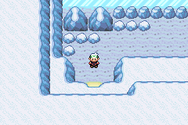
Snowy Mt. Silver
Rock artwork replaces the generic plain scene for ordinary land encounters. Blue-gray platform edges keep pale Pokémon readable.
Before After
After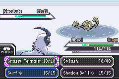
Show the surrounding map
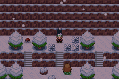
Mt. Silver at night
The snow palette receives the same nighttime blend as naturally lit outdoor maps.
Before After
After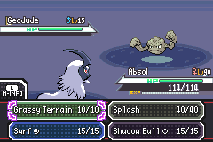
Show the surrounding map
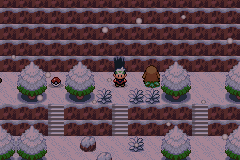
White, dark and shiny Pokémon
Absol · Ice Path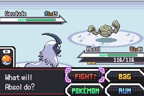
Umbreon · Ice Path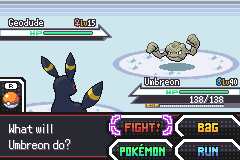
Shiny Gardevoir · Ice Path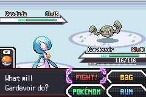
Absol · Mt. Silver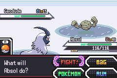
Umbreon · Mt. Silver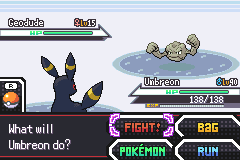
Shiny Gardevoir · Mt. Silver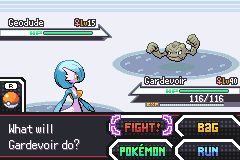
Outdoor color continuity
Hoenn · Route 101 at night
Nighttime battles stop jumping back to bright daytime colors.
Before After
After
Show the surrounding map
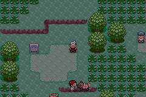
Johto · Route 29 at night
Before After
After
Show the surrounding map
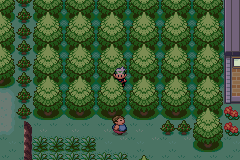
Kanto · Route 1 at night
Before After
After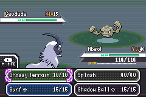
Show the surrounding map
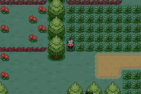
Morning and evening
Additional floors and unchanged daytime/Granite Cave comparisons
Ice Path B1F
Before After
After
Ice Path B2F
Before After
After
Ice Path B3F
Before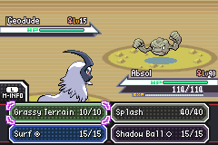
After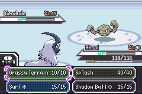
Ice Path B4F
Before After
After
Mt. Silver summit
Before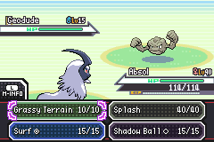
After
Granite Cave
Before After
After
Hoenn at noon
Before After
After
Johto at noon
BeforeAfter
Kanto at noon
Before After
After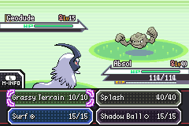
Entrances and restoration
The entry palette is frozen for the battle. Bag, Party, terrain expiry and temporary move backgrounds restore that same palette, even if the clock changes.
Ice Path entrance
Snow entrance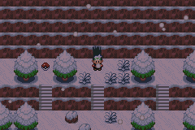
Night entrance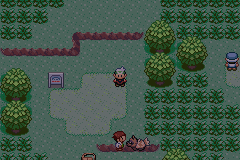
Bag returns to the captured night palette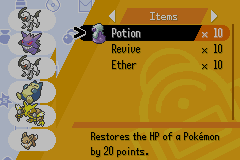
Grassy Terrain activates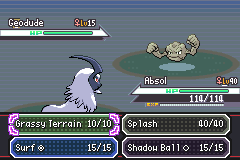
Terrain expires through normal turns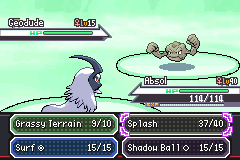
Shadow Ball restores the night palette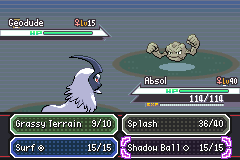
What was checked
Matched captures verify unchanged UI and Pokémon palettes and unchanged gameplay environment IDs in all 17 map/time scenes. Noon backgrounds in all three regions and Granite Cave match the baseline exactly. Separate engine tests cover Nature Power, Secret Power and Camouflage.
Testing exposed an existing menu-return memory fragmentation crash during Grassy Terrain. The return now uses the initial battle allocation order; repeated Bag and Party visits followed by the move pass.
See the reproduction instructions, palette comparisons, and full validation and source identifiers. The local playtest package includes the unpatched development ROM and a prepared Ice Path save.
Quick review: compare Ice Path, Mt. Silver and one night scene; watch the snow entrance and terrain-expiry clips. For normal gameplay, load the prepared save, walk north into Ice Path and try a battle. The complete engineering matrix is agent-run.
Before: 4bea54bfffd2ea73fcea7c34a4c36fede7cdceb2. After: 05b37db1a9b1dd8efda95233e4a61822680bba7b. No personal save or ROM is published to GitHub.